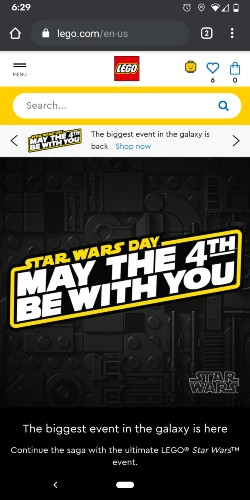
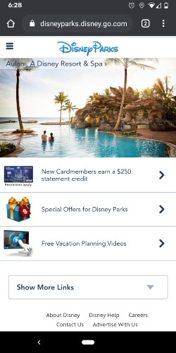

White Space
The Lego Group
This example from Lego shows good use of white pace and clean design. It draws your eyes to to it's current promotion. It is tidy, clean and bold.The negative space does not take away from the website, but it gives it a proper focus on what Lego is trying to sell
www.lego.comRepition
Disney Parks
This website shows a good example of repition. On the site you look at the advertisement, but you eyes quickly follow down, where there are links for other website content. The picture also switches between three other Disney Park experiences. This is another example of the good repition this website has.
www.disneyparks.disney.go.comContrast
Family Search
For me, this is a perfect example of contrast. The fading into the dark from the light creates a natural path to follow. The create account link stands out and grabs your attention. The further you scroll down on the page you will see each portion contrasts against the one the proceeds it and follows after it.
www.familysearch.org